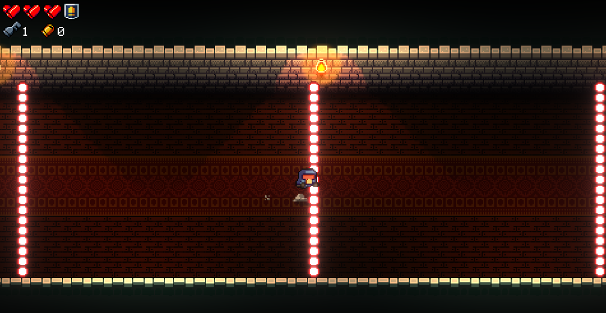
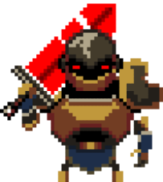
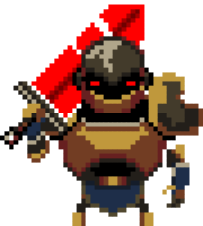

-
En esta sección mencionare algunos consejos que yo creo que podrían ayudar a mejorar y conseguir mas victorias
-

Uno de los primeros consejos a tener en cuenta es aprender a realizar el roll correctamente, el cual permite saltar por encima de los proyectiles enemigos
-
Otra recomendación seria aprender que enemigos conviene derrotar primero, ya que algunos enemigos son mas peligrosos que otros, ya sea por sus patrones de ataque o su peligro cuando se encuentran en grupos mas grandes
 

Y un ultimo consejo, si en algún momento no sabes la utilidad de algún objeto u arma, siempre tienes la opción de probar y aprender por tu cuenta, pero siempre existirá la wiki oficial de enter the gungeon en la cual puedes aprender lo que sea, de lo que quieras, acerca de todo.